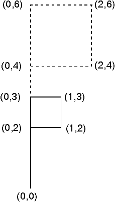

<HTML>
<HEAD>
<TITLE>Scaling a Graphics Object</TITLE>
</HEAD>
<BODY>
<H1>Scaling a Graphics Object</H1><!-- entering slot 32 -->
<P>
An application can scale the flag by 0.5, by applying:
<P>
<I>x'</I> = 0.5<I>x</I>
<P>
<I>y'</I> = 0.5<I>y</I>
<P>
The original five points of the flag are transformed: (0,0) Ä (0,0)
<BR>
(0,4) Ä (0,2)
<BR>
(0,6) Ä (0,3)
<BR>
(2,4) Ä (1,2)
<BR>
(2,6) Ä (1,3)
<BR>
The following figure shows the effect of the scaling.
<P>
<!-- Unable to decode bitmap format -->
<P>
Scaling by 0.5
<P>

<P>
This scaling preserves the shape and orientation of the object, because
the scaling factors in both directions are the same. However, scaling equations
permit different scaling factors to be applied to x and y, which can cause
distortion of the original shape of the object.
<P>


<P><HR>

<A HREF="030_L3_ScalingandReflection.html">[Back: Scaling and Reflection Transformations]</A> <BR>
<A HREF="032_L4_ReflectingaGraphicsO.html">[Next: Reflecting a Graphics Object]</A> 
</BODY>
</HTML>
